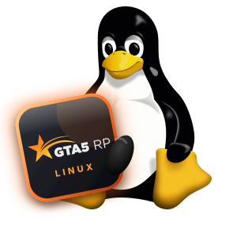

Официального лаунчера GTA5RP для Linux нет. Этот — открытый: сам находит GTA V из Steam, Rockstar Games Launcher или Epic Games Store, ставит RAGE:MP и пускает на сервер одной кнопкой. Интерфейс — оригинальный, из установщика 5RP.

Настоящие скриншоты. Интерфейс — из официального установщика 5RP, оформление и ядро — наши.
Наведите на сервер — окно плавно перетекает в его арт и цвета. Карточки наклоняются за курсором, слева — ваш сервер с живым онлайном.
zxc · dead inside, Барби, Вайб-кодер, Vice City, Diamond Casino и оригинальная — у каждой своя анимация.
RAGE:MP, токен и запуск через Proton или Wine — лаунчер делает это сам.
Игра, префикс, Proton или Wine, лаунчер магазина, EasyAntiCheat и RAGE:MP — с подсказками, если чего-то нет.
Робот ежедневно проверяет API 5RP и зеркала RAGE:MP и поднимает тревогу при изменениях.
Версия игры, Proton или Wine, папка игры и префикс, логи и вид лаунчера.
Каждую версию собирает GitHub из исходников, которые может проверить любой. Пароль уходит только на сервер 5RP.
Лаунчер сам понимает, откуда GTA V, и запускает её нужным способом. Выбрать вручную можно в «Linux-настройках».
GTA V Legacy в Steam с включённым Proton.
GTA V Legacy, купленная в Rockstar Store.
GTA V Legacy из Epic, обычно установленная через Heroic.
Новая версия из любого магазина. RAGE:MP, а значит и 5RP, работает только с Legacy.
На Windows поддерживаются все магазины: RAGE:MP запускает GTA V сам, как в официальном лаунчере.
Переключаются в настройках лаунчера одним кликом. Анимации можно облегчить для слабых ПК.
Из официального launcher_setup.exe — найдёт его в «Загрузках» или скачает с files.gta5rp.com.
Закрытое Windows-ядро заменено открытым Python-кодом, который отвечает интерфейсу так же, как оригинал.
RAGE:MP получает адрес сервера и токен (launch2.*) и стартует через Proton — в префиксе Steam, Heroic, Lutris, Bottles или вашем Wine.
$ git clone https://github.com/alinaz18/gta5rp-launcher-linux $ cd gta5rp-launcher-linux && ./install.sh
$ sudo apt install ./gta5rp-launcher_*_all.deb$ sudo dnf install ./gta5rp-launcher-*.noarch.rpm$ git clone https://github.com/alinaz18/gta5rp-launcher-linux $ cd gta5rp-launcher-linux/packaging/aur && makepkg -si
Пакеты — в последнем релизе: .deb · .rpm
Играете на Windows? Пользуйтесь официальным лаунчером с gta5rp.com. Сборка этого лаунчера для Windows тоже есть — только ради тем оформления, она лежит в релизах.
Нет. Это независимый проект с открытым кодом, не связанный с GTA5RP, RAGE Multiplayer, Rockstar Games или Valve.
Официальный лаунчер 5RP работает только на Windows. Этот — для тех, кто играет на Linux: он делает то же самое, но через Proton или Wine. На Windows проще пользоваться официальным.
Подходят версии из Rockstar Games Launcher и Epic Games Store. Лаунчер сам находит их в Heroic, Lutris, Bottles и обычных Wine-префиксах; если не нашёл — укажите папку игры и префикс в «Linux-настройках». Для Epic-версии в том же префиксе нужен настоящий Epic Games Launcher: лаунчер поставит его кнопкой, а вы один раз войдёте в аккаунт.
Нет — RAGE:MP работает только с GTA V Legacy. Её можно бесплатно поставить рядом, если у вас есть Enhanced: в Steam это отдельная игра «Grand Theft Auto V Legacy», в Rockstar и Epic — отдельный вариант установки.
Вход происходит в оригинальном окне 5RP и уходит напрямую на api.gta5rp.com — как в официальном лаунчере. Лаунчер сохраняет только токен сессии (его можно сбросить кнопкой «Выйти»). Весь код открыт на GitHub.
Это обычная проверка RAGE:MP при первом запуске — нажмите «OK». Если на Linux он спросит папку GTA V — выберите диск G:.
Лаунчер делает то же, что официальный: передаёт адрес сервера и токен в RAGE:MP, античит работает как обычно. Гарантий нет — решения о блокировках принимает администрация 5RP.
Настройки лаунчера → «Оформление» → анимации «Лёгкие» или «Выкл».